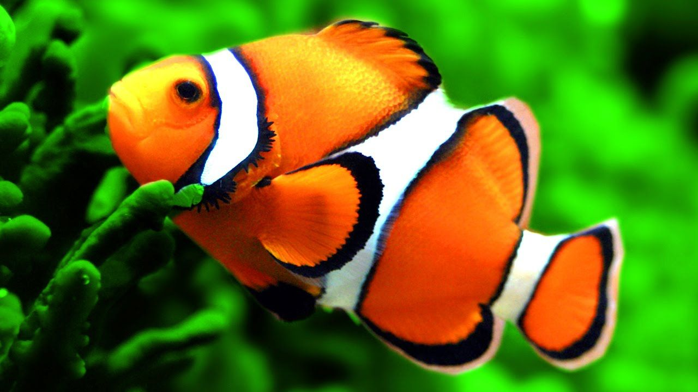

Penyu atau katung adalah kura-kura laut yang ditemukan di semua samudra di dunia. Penyu sudah ada sejak akhir zaman Kapur atau seusia dengan dinosaurus.

Ikan badut atau dikenal juga sebagai clownfish adalah ikan kecil yang hidup di perairan hangat seperti laut tropis, terutama di wilayah Indo-Pasifik.

Ikan Channa atau dikenal juga sebagai snakehead merupakan jenis ikan predator air tawar yang berasal dari Asia, terutama wilayah Asia Selatan dan Tenggara.

Ikan cupang atau dikenal dengan nama ilmiah Betta splendens adalah salah satu jenis ikan hias air tawar yang sangat populer karena keindahan warna dan bentuk siripnya yang memukau.